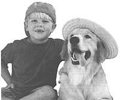
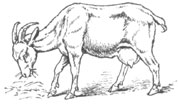
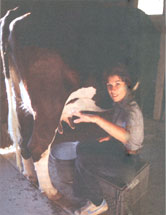
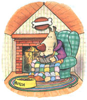

PET HEALTH
Andrea Looney, D.V.M., provides some quick solutions to your farmyard animal problems.
Dear Andrea:
My four-year-old golden retriever had a small bump on his head where a tick once was. How do I know the tick isn't
still in there?
- Brenda Franklin
Cairo, NY
Dear Brenda:
Quite frankly, you don't! A tick will penetrate the skin with its head and mouth, leaving the remainder of its body outside the epidermis to expand as it fills with blood. When done with the meal, the tick backs out of the skin, leaving behind a sore or area of inflammation that it produced as it invaded the tissue. This sore can be as large as the tick itself. It eventually will heal as the body "fills in" the area of penetration with new cells (fibrosis).
Problems occur when folks attempt to remove the pests from the animal and do so incompletely. The head can break off as people attempt to pull the tick out and is often left in the animal's skin. The skin reacts to the remainder of the tick (head) like it would to a foreign substance and attempts to "wall it off" or surround it with stronger more rugged tissue (granulation or proud flesh).
Most of the time, the animal's body will break down or expel the remaining parasite; warm-water compresses will help this to occur and assist with healing of the wound. Sometimes, however, it is necessary for a veterinarian to surgically remove the nodule.
It is very unlikely that the entire tick would burrow under the skin and remain there since it too needs oxygen to survive. I suspect that the small bump you see on your pup's head is most likely simple scar tissue secondary to the tick bite.
Dear Andrea:
My poodle-mix puppy is constantly tilting his head and holding one ear funny. What can we do to treat ear mites?
- Kaye McIver
Red Bluff, CA
Dear Kaye:
First off, it is a rarity for dogs to have "ear mites." The mite, Otodectes , is a common parasite of the external ear canal of cats and ferrets but rarely affects dogs. However, dogs do succumb to a variety of bacterial and yeast ear infections quite readily. Poodles, cocker spaniels, and golden retrievers seem to be prone to these because of their ear anatomy and internal hair.
Moistness and humidity play a great role in ear infections. The key to success in treating these infections is keeping the ear dry. Do not use alcohol or pour anything down the ear canal. Simply try using soft tissue or gauze, wiping down as far as you can. Do not use cotton, as it will stick to the inflamed tissue, and don't use swabs, as they will tend to push the infection farther in. Air alone is a great drying agent, so you might try to tape the ear flaps up on top of the head for a few days. A 50/50 mixture of vinegar and warm water is useful for gently cleaning after you've dried and removed most of the debris. It will help eliminate some of the fungus. An antibiotic may be necessary from your veterinarian to treat the bacteria.
DON'T USE ALCOHOL
One of the best ways to treat an ear infection is simply to keep the affected area dry.
Dear Andrea:
Our pet Nubian goat, Flower, got loose the other day and jumped the fence. It appears that she may have broken her leg. She's walking on the leg, but very tenderly. Will it heal? Can we do anything?
- Elizabeth Martinez
Taos, NM
Dear Elizabeth:
Will it heal? Chances are, yes. Will it heal correctly without some type of cast or fixation? No, probably not. The best thing you can do outside of having your veterinarian take some x-rays and apply a cast, would be to confine Flower to a box stall with access to a very small outdoor area. Make sure she gets some sun, which helps vitamin D metabolism and is important for healing all tissues. Minimize her jumping and climbing by providing her with food at nose level and soft grassy ground with little to no large rocks. To relieve the pain, cold pack the limb at least once a day for the first week. You might even stand Flower in a bucket and run cool water over the limb if the injury is in the lower leg. You can also give her a couple of adult buffered aspirin once a day, or every other day, for a few weeks to help bring down the swelling.
While it's common for tethered goats to injure themselves, it's fairly uncommon for most adult goats to fracture their limbs while running and jumping since they are a mountain animal. I'd suggest checking the quality, freshness, and calcium/phosphorus content of your feedstuffs to assure yourself that the fractures aren't related to nutrition. Also, bad bruises and sprains of ligaments and tendons are much more common than fractures but often appear so sore that the animal will be just as lame for just as long. Rest and whirlpool therapy will really help these injuries as well.
Dear Andrea:
We have a terrible time with grubs in our holstein-heifer herd. What can you do to get rid of these nasty pests?
- Andrew Baron
Carbondale, IL
Dear Andrew:
Grubs are parasitic fly larvae. Botflies, as they are also called, are usually members of the genus Hypoderma . They look like bees and lay their eggs on the hair of the legs and lower belly of cattle. The eggs hatch and the larvae burrow through the skin, setting off on a long migration through the cow's muscles and connective tissues until they reach the skin on the back. Here, each grub forms a subcutaneous lump with a breathing hole through the skin, and remains here destroying tissue until they drop out, mature into a fly, and start the whole cycle over again.
These little critters are really pests as departments of agriculture all over the world can attest. Thousands of dollars have been lost from cattle that have spent time bothered by grubs instead of making milk or grazing. There are many sprays, pour-ons, powders, and injections that will treat these pests, but extreme care must be taken in choosing one or the other for milking animals. In mildly affected cows, it is best just to leave the grubs alone or inject a small amount of hydrogen peroxide into their breathing holes in the skin with a blunt teat cannula. This is usually effective in forcing them out of the skin. Do not pinch or squash them in the animal's skin or attempt to extrude them from their lumps with manual pressure, as the proteins these grubs exude can cause anaphylactic shock. Fly control in the barn via mucking and fly strips is essential in controlling these parasites.
Dear Andrea:
Our quarter-horse mare has had a bad case of thrush for the past seven months. We've tried all types of topical medications to no avail. Is there something we're missing?
- Eric Kilburn
Glasgow, KY
Dear Eric:
Thrush is an infection of the frog, or triangle-shaped, sensitive area on the underside of the horse's hoof. Many horses will have this in one or two feet and will become moderately lame with it. The feet will be soft and will exude a foul odor.
The most important aspect of treating the disease is to give the animal clean, dry bedding. Moisture and dirt precipitate the problems. Fresh daily sawdust or shavings is 100% better than straw but a bit more expensive. Clean the underside of the foot to remove manure and dead tissue, thereafter cleaning the feet daily with a hoof pick. A variety of astringents can be used: witch hazel, copper sulfate, or alcohol. One that I have found to be very beneficial is very dilute liquid bleach solution (a teaspoon to a bucket of water). Use this to clean the sole and frog daily. But bear in mind that no medication will work if the animal is constantly standing in moisture, manure, or mud.
Dear Andrea:
Our nine-year-old female Brittany spaniel, Chelsea, started losing her hair and slowing down about a month ago. Her tail is almost bare and our veterinarian believes her thyroid gland isn't working. Could you explain this phenomenon?
- Christine Baylor
Wilksboro, NC
Dear Christine:
The thyroid gland is known as the master gland in the body because the hormone it secretes governs so many important cardiovascular, gastrointestinal, dermatologic, and other endocrine functions. The cause of hypothyroidism in the dog, as it is known, is primarily either an atrophy or glandular collapse, or may be related to an autoimmune destruction of the gland itself. A less common cause of primary thyroid disease is severe iodine deficiency with resulting goiter, but this doesn't occur commonly in dogs fed commercial diets.
The clinical signs of hypothyroidism can vary among dogs, but the overall effect is a reduced metabolic state. As a result, dogs with hypothyroidism tend to gain weight, sometimes to the point of obesity. They fatigue easily with exercise and become less active. Some even develop a marked intolerance to cold and may seek out heat sources such as registers or vents. They may become anemic because of their decreased metabolic rate and oxygen utilization.
Dogs with hypothyroidism are frequently presented to the veterinarian with primary complaints of skin and hair coat problems. Affected dogs lack luster to their coat and baldness of varying degrees occurs; a common characteristic is baldness of the tail. Owners may also complain that the nose changes color and indeed, it does become more pigmented. The skin becomes scaly and more prone to superficial infections, due to abnormal deposition of the upper layer of the epidermis, the stratum corneum.
Your dog can be tested for this disease via two methods. One involves a simple blood test that checks for a subnormal level of thyroid hormone. The other involves actually stimulating the thyroid gland and analyzing a blood sample afterward to assess the amount of thyroid hormone produced. Although rather expensive, the second method is preferred and considered to be a more accurate method of assessing an animal suspected of having the disease.
Hypothyroidism can be treated with long-term oral-replacement therapy. Most dogs are supplemented with thyroid hormone on a once- to twice-a-day basis. The skin lesions and changes in hair coat may require several months to return to normal, but for the most part, this is considered a treatable disease in middle-age to geriatric animals.
Dear Andrea:
My two-year-old, 125-pound, Great Dane doesn't enjoy being indoors. I built him an insulated house and am considering a heating element with his straw bed. Any advice?
- Tom Ciras
Charlton, MA
Dear Tom:
The outside dog needs a snug house for protection from the elements, especially strong sun and wind. Except in very cold climates, it should not be insulated. Why? Because insulation or heating allows the humidity to build up, causing condensation to form. The condensation has two ill effects. First, it invites mold to form. Second, it chills the animal. You can minimize the formation of condensation by creating a space between the roof and walls, allowing air to circulate in and naturally gry the internal atmosphere.
There should be plenty of bedding in the house and straw is an excellent choice. It should be straw, not hay, and be changed periodically for parasite control and simple cleanliness. A combination of the two - straw and heat/moisture not only encourages mold, but fleas and intestinal parasites as well, so try to pick the driest straw you can.
It's funny how most dog houses look like our own houses (peaked roof with shingles) when in actuality many dogs love to lay on top of their homes. Thus, the roof should be flat, with a mild slope and either painted dark or covered with a dark heavy rubber or carpet. The dark colors will also absorb the natural heat of the sun and allow the animal a choice of heat with wind (roof) or heat without wind (straw-enclosed bottom) in cooler climates.
FORGET THE MATS AND THE BLANKETS:
Dry straw, changed periodically, is all most dogs need for warmth in an outside house.
|
Know what you're doing before trying to treat your dog's tick bites. |
 Your cow will spend more time grazing and producing milk if you stop grubs by keeping the fly population down in the barn |
 |
|
 |
 |
|